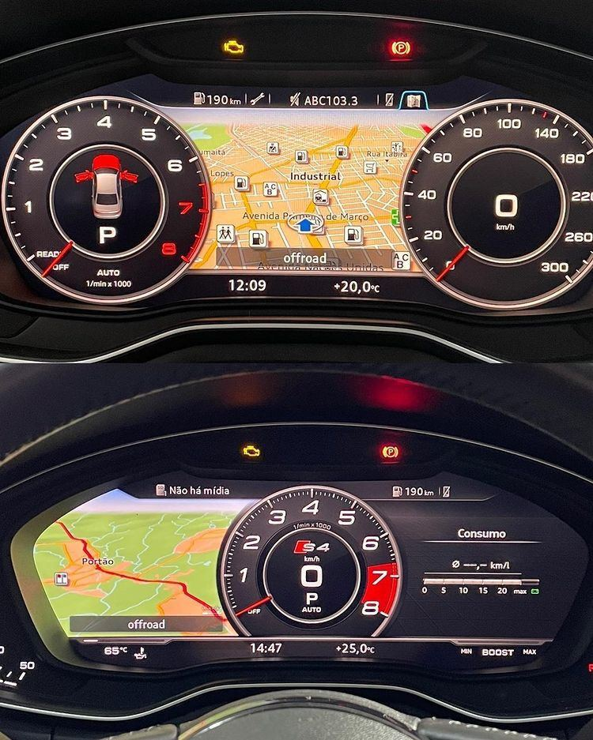
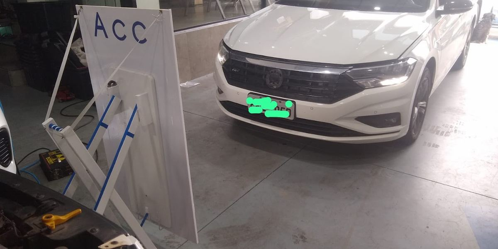
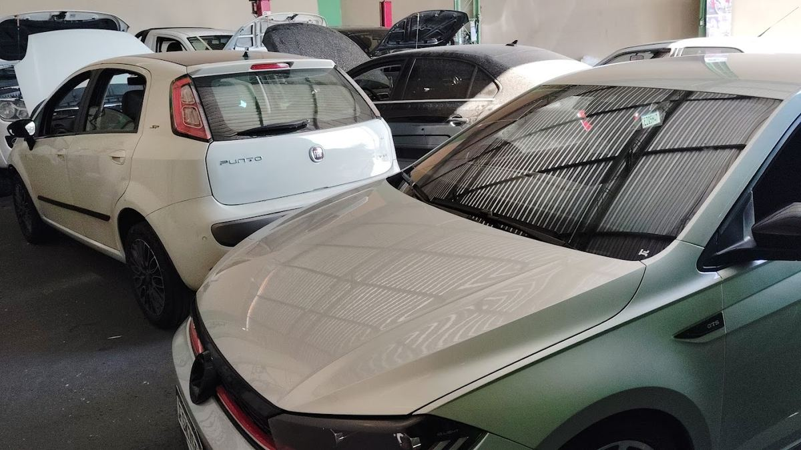
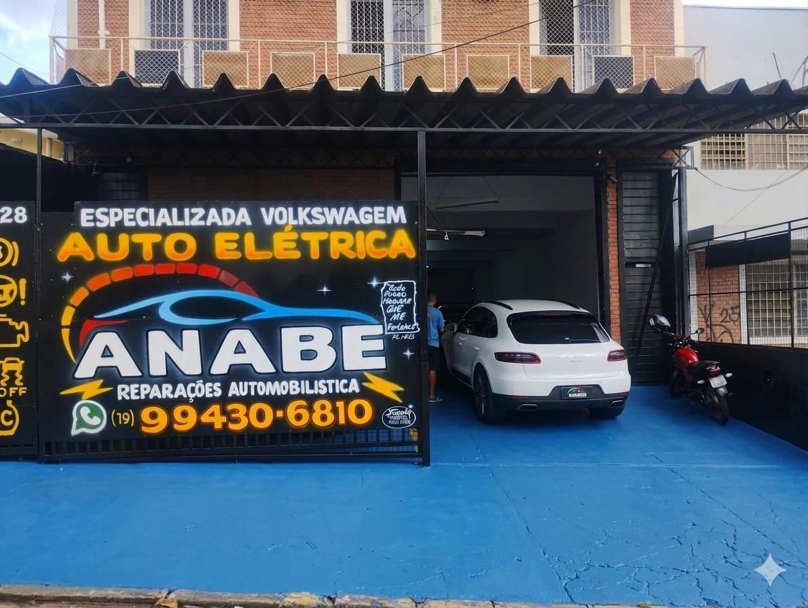

O defeito que ninguém achou, a gente acha.
Auto elétrica e eletrônica embarcada: injeção, airbag, ABS, direção elétrica e calibração de ACC. Diagnóstico com calma antes de trocar qualquer peça.

Que luz acendeu no seu painel?
Toque no símbolo parecido com o do seu carro. A gente explica o básico e você já manda para a oficina.
Elétrica e eletrônica do carro
Injeção eletrônica
Falhas, luz acesa, consumo alto e partida difícil.
Airbag
Luz do airbag acesa e módulos.
ABS e estabilidade
Sensores, módulo e chicote.
Direção elétrica
Direção pesada ou com aviso no painel.
Calibração de ACC
Piloto automático adaptativo e radar.
Elétrica geral
Partida, carga, fusíveis, relés, buzina e chicote.
Eletrônica embarcada
Painéis digitais e módulos de conforto.
Troca de óleo
Aproveite a visita para a manutenção.


Volkswagen Tera que não pegava
Um problema intermitente na bomba de combustível queimava o fusível e impedia a partida. Depois do diagnóstico na parte elétrica e no chicote, a bomba e o relé foram trocados. Resultado: carro funcionando e cliente satisfeito.
Em outro caso, um Cruze com luz de injeção, ABS e airbag acesas: o problema era uma folga no conector do sensor. Resolvido sem trocar nenhuma peça.
Honestidade que aparece nas avaliações
Acharam o defeito no airbag que ninguém conseguiu corrigir. Equipe nota 1000, com atendimento honesto, rápido e profissional.Thiago · Google
Ele insistiu em testar tudo com calma antes de qualquer troca. Profissional diferenciado: honesto, paciente, responsável e muito técnico.Neilton · Google
Educação acima de tudo, lugar limpo e aconchegante com sala de espera.Avaliação no Google

Vila Georgina
Av. Eng. Antônio Francisco de Paula Souza, 2728 · Campinas (SP)
Segunda a sexta, das 8h às 18h · com agendamento
WhatsApp (19) 99430-6810 · @anabereparacoesauto